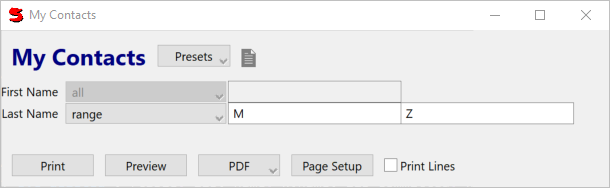
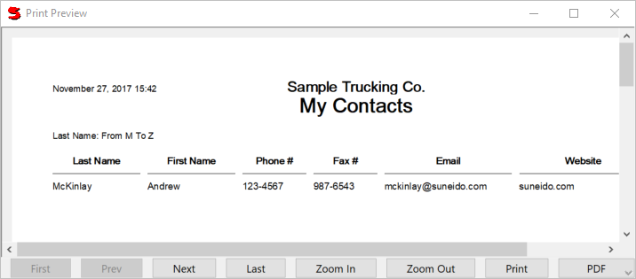

For most reports it's useful to allow the user to specify options, for example which information to print, or how to print it. Suneido refers to these options as report parameters.
To allow the user to select contacts based on their first or last names, we would add a Params: member to our report:
Params:
(Vert
(ParamsSelect firstname)
(ParamsSelect lastname)
)
We use a Vert to handle the layout. For more complicated layouts, you may want to use a Form or Grid. ParamsSelect wraps a field and provides options for selecting values similar to Select on Access. It supports equals, greater than, ranges, etc. The result would be:
Note: Parameters that are left empty select all values. Leaving First Name empty means we want all first names.
It is often useful to print the parameters on the report so that the user can see what they selected to get that report. This is done with printParams:
printParams: (firstname, lastname)
For the above parameters, this would print at the top of the page:
Last Name: starts with M
It's also useful if the parameters are saved so when the user comes back to the report their previous parameters are filled in. To do this we just have to supply a name to save them under:
name: "My Contacts Report"
This name can be whatever you like, keeping in mind that reports with the same name will share the same saved parameters.
Next we have to modify the report to actually use the parameter information. We can do this by defining the format as a class derived from QueryFormat. (QueryFormat { ... } defines a class derived from QueryFormat) We can then define Query as function that will return a query built from our parameters. We can use the _report.GetParamsWhere() function to return the "where" portion of a query based on specified parameters. We also specify the Output of the QueryFormat as a Row with the desired columns. Your code will now look like this:
#(Params
title: "My Contacts",
name: 'My Contacts'
Params:
#(Vert
(ParamsSelect firstname)
(ParamsSelect lastname))
printParams: (firstname, lastname),
QueryFormat
{
Query()
{
return 'mycontacts' $ _report.GetParamsWhere('firstname', 'lastname')
}
Output:
#(Row lastname, firstname, phone, fax, email, website)
}
)
Note: This version is called My_ContactsReport2 in the supplied mylib.
When you run this, you should get something like:
